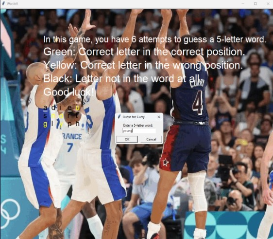
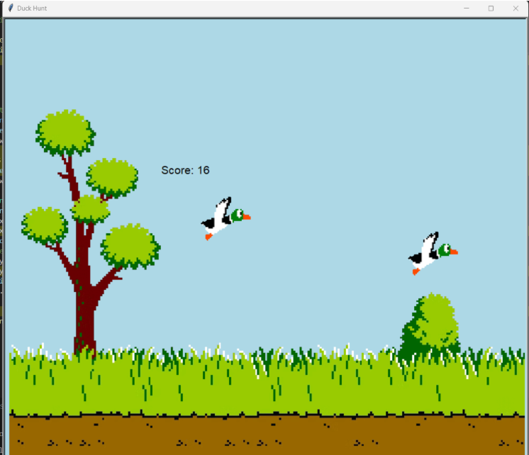

Home
Portfolio
About Me
This is my Portfolio Page!
Wardell

This is a game that I made with Gian. It is Wordle but themed around the NBA player Wardell Stephen Curry II
Duck Hunt

This is a game based on the 1984 NES game Duck Hunt. The player uses their mouse to click on ducks that are moving across the screen, with more ducks being added to the screen at certain scores
Veterans Card

This is a card I made with Artin that displays a message of gratitude to veterans and then allows them to play a military trivia quiz